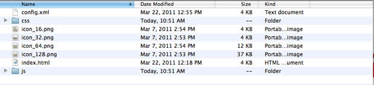
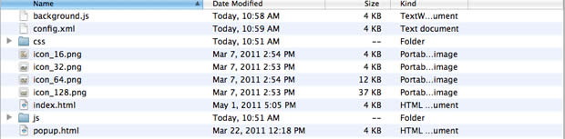

Converting widgets to Opera extensions: Things to keep in mind
From Opera 15 onward, Opera 11 & 12’s extension format is no longer supported, and instead, we’ve switched to Chromium’s extension model. Check out our new documentation for developing extensions for Opera 15 and higher and start building your own extensions.
Introduction
This article will shed light on some things to keep in mind for Widgets developers when converting widgets into Opera Extensions. We recently announced that the sun is setting on our support for Widgets (and Unite) in upcoming versions of Opera, so this article will help developers who have existing Widgets to convert them into the highly-popular Opera Extensions format, if they so choose.
If you haven’t already, we'd recommended that you take a look at developing Opera extensions and gain some familiarity with how it is made before reading this article.
One very important and useful thing to note is that Opera Extensions are based on the same packaging format as Widgets, i.e, the Widget Packaging and XML Configuration Specification. There are a few differences between the two, but essentially both are based on the same config.xml file, index.html build file, and other files necessary for the look and behavior, which are then packaged together into a zip file (then given a custom file extension — .wgt for widgets and .oex for extensions).
To start with, let’s take a deeper look into the packaging format. We will take the Geolocator widget and convert it to an extension during the course of the article.
Packaging
Widgets are .wgt files and Opera Extensions are .oex files, however, both are essentially .zip files renamed into their respective formats. One thing to keep in mind is that if you want to convert your widget to an extension (especially if it requires some interactivity from the user’s side), the best way is to make it run inside the popup page of the extension. Figure 1 shows how the files differ between a Widget and an Opera Extension


Figure 1: Files inside the Geolocator widget file (top), and the converted Geolocator extension file (bottom).
In Widgets, generally the build file (called index.html) was the main page where the UI of the whole app manifested itself. All the JS, CSS and image files were ultimately linked to that. In the equivalent Opera Extension, you want to display the functionality in the popup, so start off by renaming your widget’s index.html to popup.html.
Then what about the index.html file? Is isn’t it needed even in extensions? Yes, it is. Next you should create a new index.html build file linking to the background.js script, which should look like so:
<html>
<head>
<title>Index Page</title>
<script type="text/javascript" src="background.js"></script>
</head>
</html>The linked background.js file is needed to define the UI properties of the extension (like the icon, the popup file, the size of the popup, etc). So let's create that next; you define the popup like so:
...
popup: {
href: "popup.html",
width: 500,
height: 420
},
...Read our article how to use the background.js script to add buttons, badges and popups to extensions to find out more about how background script works.
Keep in mind that this popup.html is just the renamed 'index.html' that we had in the widget.
Correcting the configuration file
Now let's move on to the configuration file: usually referred to as config.xml, this is a simple XML file needed for both widgets and extensions. You already have a widget config.xml, which just needs a few changes to make it work properly in extensions. These changes actually make writing config.xml easier for extensions, which is welcome news!
You need to make the following changes:
- The
<widget>tag for widget config.xml had an attribute called"dockable". That was specific to widgets, so delete it. - You need to add an
xmnlsattribute to the<widget>tag, so that it looks like<widget xmlns = "http://www.w3.org/ns/widgets"> - In widgets, you have the tag
<widgetname>. This should be renamed to<name>in the config.xml for extensions. <width>and<height>are defined in the config.xml for widgets, but they are not needed for extensions, so delete those elements (in extensions, the width and height of the popup is defined in the background.js file).- In widgets, the author information was stated in the
<id>tag of the config.xml, but this is not needed in extensions. Instead, you can include similar information in the <author> tag, with attributes like"email"and"href". - In widgets, icon files used to be defined in the config.xml like so:
<icon>icon.png</icon>. In the config.xml for extensions, it is simply defined like<icon src="icon.png" />. You need to make this change as well. - The
<host>tag is not required in the config.xml for extensions, so delete it.
Storage
The mechanism for storage in widgets and extensions differ slightly. In extensions, you store items using widget.preferences.setItem() and retrieve it using widget.preferences.getItem().
| Action | widget | extension |
|---|---|---|
| Store | widget.setPreferenceForKey() | widget.preferences.setItem() |
| Retrieve | widget.preferenceForKey() | widget.preferences.getItem() |
So you need to replace widget.setPreferenceForKey() with widget.preferences.setItem(), and widget.preferenceForKey() with widget.preferences.getItem() in all of your scripts when you are converting your widgets to extensions. The functions work exactly the same way; its just the naming that has changed.
The finished product
And that's it! Figure 2 shows our existing Widget running as an Opera Extension.

Figure 2: The converted Geolocator extension
You can download the Geolocator Widget file and the converted Opera Extension file and peruse the code to see the differences. As an additional example, take a look at the Analog Clock Widget and the converted Analog Clock extension.
Communication with a server using XMLHttpRequest
Some widgets require communication with a server using Ajax. This was pretty straightforward in Widgets, where you could do an XHR request directly from the index page. However, in extensions, you need to communicate with the background script, which will do the Ajax request and then communicate the result back to the popup page. We have an excellent article showing how to do this — Accessing an Opera Extension's background process.
Opening links in the browser
Some widgets required the widget.openURL() method to open links in the browser. To do this in extensions however, the popup file would need to communicate with the background.js file, which will open a new tab and the load the URL within it. You can take a look at the Windows and Tabs API documentation as well as our article on messaging in extensions, which deals with communicating between different parts of an extension (including between popup and background script) and how to go ahead with it.
Polishing things up
Keep in mind that the Opera Extensions you have converting from Widgets may work, but still may or may not conform to the Opera extension publishing guidelines. We'd recommend that you take a look at it, and adjust and polish the extension to conform to the guidelines before submitting it to the Opera addons catalog.
This article is licensed under a Creative Commons Attribution-Noncommercial-Share Alike 3.0 Unported license.
Comments
-
I wonder how this applies to games like the famous PipePanic or DrPresto. There is no UI button, and the game is running in a chromeless window unrelated to the browser. Could you add some examples for that? Thanks.
-
And Unite?
-
I miss something important probably: To start one of the games I mentioned I don't need to start the browser. How do I do that with an extension?
-
90% of the most popular widgets require the superior UX features of the widgets API. They cannot be converted to extensions (if I understand it correctly) until the extensions API reaches a similar stage. I really hope they are supported until then.
-
I don't understand quite why Opera company is changing drastically of what became successful without having a true solution for the replacement. It is confidence break with users.
-
@Thomas The Geolocator widget that I took the example of in my article also has no real UI button, and is running in a chromeless window unrelated to the browser. The screenshot you see in the article is the final result where we converted the widget and now its running inside the browser as an extension.
-

If you need a more persistent UI than an extension's popup, simply use opera.extension.tabs.create({ url: 'popup.html', focused: true }) to open the interface in a full-fledged tab. You could also create a new window, then create the tab in it.
No new comments accepted.Thomas Scholz
Thursday, April 26, 2012
Johann Antonio
Friday, April 27, 2012
Thomas Scholz
Friday, April 27, 2012
I can drag the game to any screen where I want it. This is not possible with an extension, is it? Plus, I cannot see how to get the extension button away from the extension bar and move the shortcut to another place like the desktop or the start menu. This is easy and intuitive with real widgets.
Thomas Scholz
Friday, April 27, 2012
Mr. Louis
Thursday, May 17, 2012
Shwetank Dixit
Thursday, June 14, 2012
The same principles mentioned in the article will apply when converting the widget games to extensions.
@Jahann : We're using parts of Unite already in many places of Opera, like our UPnP support in Dragonfly etc. We're right now working on improving our extension platform, and will use the inspiration from Unite to add more awesome to the extensions plattform in the future.
Anon edit:
There's a bug on page http://dev.opera.com/articles/view/converting-widgets-to-opera-extensions/
I see Edit and Delete links for Shwetank Dixit's comment posted on Friday, April 27, 2012.
I only tried Edit.
Joel Spadin
Thursday, June 14, 2012
Also, there are still a number of things which cannot be converted to extensions. Will extensions ever be able to read from and write to arbitrary (user white-listed) filesystem locations? Currently, the user must provide a file through a file open dialog, and the only way to save a file is to form a data URI and open it in a new tab, meaning it is impossible to build something like UJS Manager as an extension.
Speaking of Unite features and UJS Manager, one of the nicest Unite features was the ability to open a Unite service as a panel. When I try to open a widget:// URL as a panel, I get nothing. Will there be a way to interact with an extension through a panel?